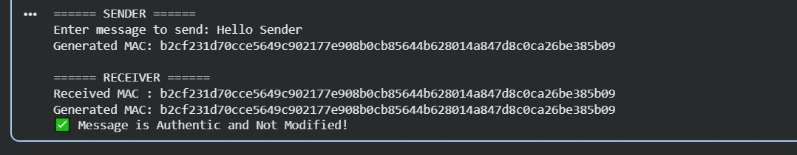

MAC-Based Message Authentication using HMAC (SHA-256)
# MAC-Based Message Authentication using HMAC
import hmac
import hashlib
# Shared Secret Key (Must be same for sender & receiver)
secret_key = b"gmiu_shared_secret"
# ----------------------
# Sender Side
# ----------------------
print("====== SENDER ======")
message = input("Enter message to send: ")
message_bytes = message.encode()
# Generate HMAC using SHA-256
mac = hmac.new(secret_key, message_bytes, hashlib.sha256).hexdigest()
print("Generated MAC:", mac)
# Simulate sending message and MAC
received_message = message
received_mac = mac
# ----------------------
# Receiver Side
# ----------------------
print("\n====== RECEIVER ======")
# Receiver generates MAC again using same key
new_mac = hmac.new(secret_key, received_message.encode(), hashlib.sha256).hexdigest()
print("Received MAC :", received_mac)
print("Generated MAC:", new_mac)
if hmac.compare_digest(received_mac, new_mac):
print("✅ Message is Authentic and Not Modified!")
else:
print("❌ Message Tampered or Invalid!")
Output
